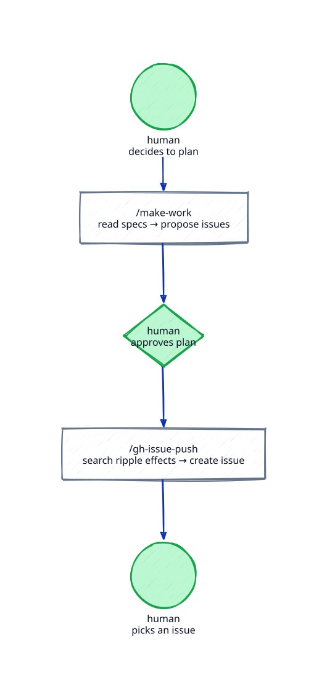
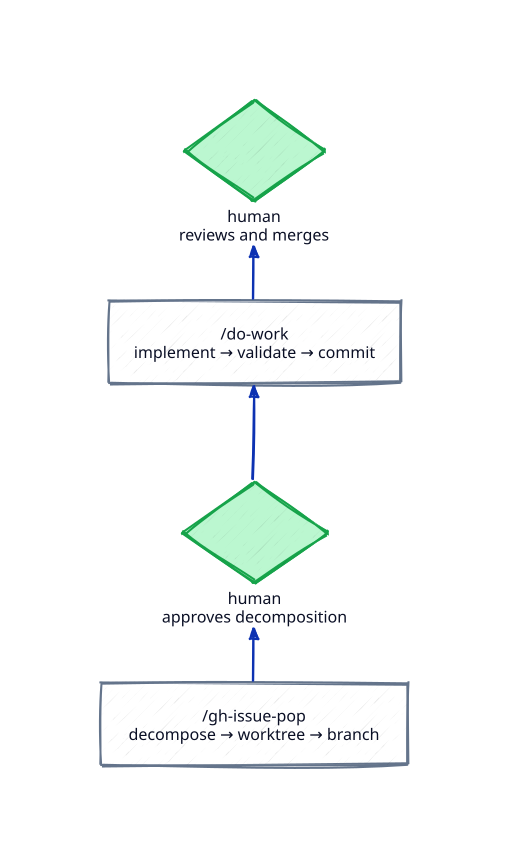

- Four commands: /make-work plans, /gh-issue-push files, /gh-issue-pop decomposes, /do-work ships
- A human gate between every command
- State lives in GitHub — each command starts fresh
- The merge closes the issue; the loop starts again